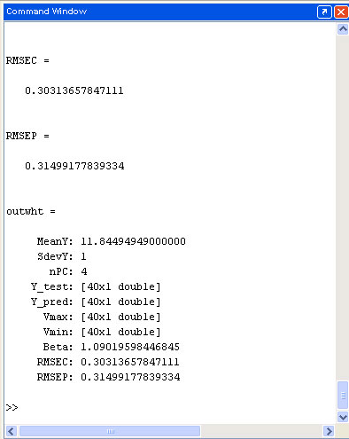
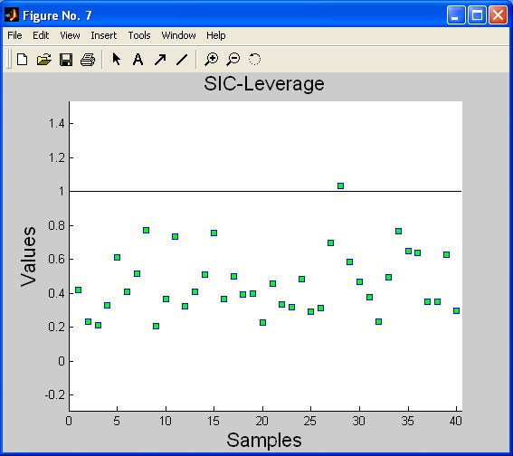

|
|
Software implementation of
SIC method for MATLAB |

Now the SIC method is implemented in MATLAB script-language. The
program includes two main modules: SIC_result
and SIC_OSP, named in accordance with their basic functionality. The SIC_result module calculates the estimation of the maximum error deviation Beta
and SIC
intervals, using the calibration and test datasets, provided by the user. The SIC_OSP module employs the output of
the SIC_result procedure for calculation of the SIC-Residuals, SIC-Leverages and construction of the Object
Status Plot.
Output=Sic_result(Tc,
Tt,
Yc,
Yt,
Yc_pred,
Yt_pred,
Beta,
nPC,
MeanY,
SdevY)
| Tc | matrix of scores for calibration set Xc |
| Tt | matrix of scores for test set Xt |
| Yc | calibration set Yc after preprocessing |
| Yt | test set Yt (optional for new object) after preprocessing |
| Yc_pred | predicted values for Yc after preprocessing |
| Yt_pred | predicted values for Yt after preprocessing |
| Beta |
parameter that defines how the MED ‘Beta’ will be calculated. Admissible are either the string expressions ‘betasic’or ’betamin’, or a positive numeric value. |
| nPC | number of principal components used in modeling |
| MeanY | mean value for Yc, used for post-processing |
| SdevY | Standard deviation for Yc, also used for post-processing. |
Output - MATLAB structure with the following fields
{
MeanY, SdevY used for post-processing nPC number of principal components Y_test - test set Y Y_pred predicted Y (PLS or PCR) Vmax, Vmin SIC-interval for the test set Beta value of ’Beta’, used in the model RMSEC Root-Mean Square Error of Calibration RMSEP Root-Mean Square Error of Prediction
}
Result=Sic_OSP(mod)
Result - Structure, that contains SIC-Residuals, SIC-Leverages & Boundary for the test dataset from the input
structure Mod - Model from the SIC_result module.
{
| Res | SIC-Residuals vector |
| Lev | SIC-Leverage vector |
| Bound | Boundary values, shows how close is the object to model boundary |
| Bnum | number of boundary objects |
}
Prerequisites
We provide two versions of the SIC software.
Version 1 uses standard LINPROG solver for solving the linear program problem as a part of the SIC algorithm.
MATLAB Optimization tool-box is required to use LINPROG function.
We also provide a "non-linprog" version of our program.
Version 2 uses popular GLPKMEX solver for solving the linear program problem. Version of GLPKMEX compatible with SIC software can be found in the Download section.
The installation of GLPKMEX into the Matlab environment is similar to the installation of the SIC software.
First of all be sure, that the program files are accessible for your MATLAB IDE. There are two ways to do it. You may put the files into your current working directory (i.e. C:\MATLAB6p5\work), or change your working directory, in such a way that files are located inside.
To use SIC
program independently from the current working directory, add the path of the
SIC program files to the MATLAB Path.
After all necessary
data are input in your MATLAB workspace (as shown in the picture above), you may start working with the program by typing the following
command

To construct
the OSP for your data use the following command
To
calculate the OSP for the calibration set (to find boundary samples), you should replace
the test set with the calibration set in the programs input.
If the Ytest is unknown, you may enter an empty matrix instead of it. The programs output should be changed as follows

It is
possible to define the absolute outlier (sample #28) on the plot, even without
the SIC-Residuals.
This is a beta release of the program. The authors do not assume responsibility for any expense, damage or loss caused by your use of this software, however it comes down. Any feedback is welcomed. Please, contact the author Yury Zontov
You may download a free version of the program by clicking the link
All the registered trademarks used herein are
registered to whoever it is that owns them. This notification is given in lieu
of any specific list of trademarks and their owners, which would not be as
inclusive and would probably take a lot longer to type.
First
presented at the Tenth
Scandinavian Symposium on Chemometrics
Lappeenranta, Finland, June 2007
|
|
|
Last modification: 28.05.13